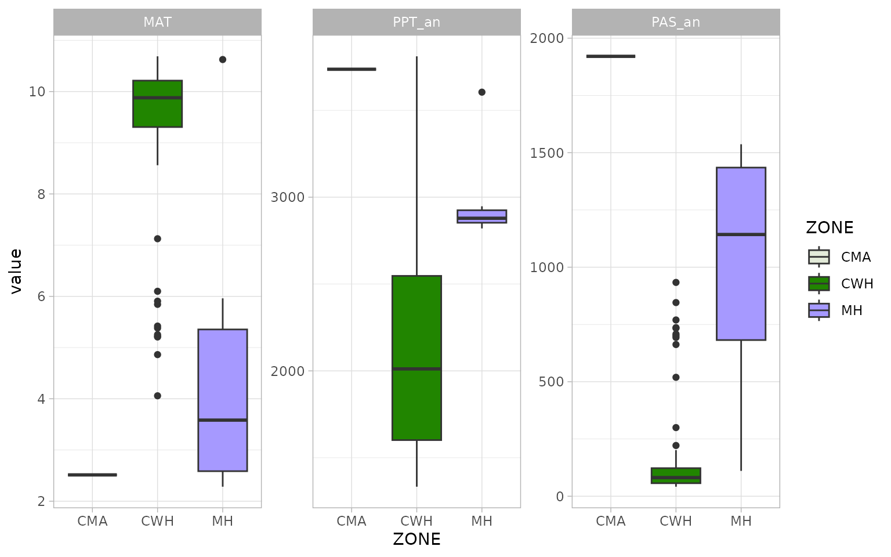

Intermediate `climr` workflow
climr_workflow_int.RmdIntroduction
climr is in essence similar to ClimateNA in that it downscales low-resolution
(~100km) global climate model anomalies to high-resolution (1-4km) maps
of climate, with further elevation adjustment to user-specified
elevation grids/points based on empirical lapse rates (local
relationship of climate to elevation) of the 1-4km climate maps. The
elevation-adjusted monthly values of basic climate elements (temperature
and precipitation) are then used to estimate derived variables (e.g.,
degree-days, precipitation as snow) based on published equations and
parameters from (Wang et
al. 2016).
See vignette("methods_downscaling.Rmd") for a detailed
explanation of the downscaling methodology employed in
climr.
climr’s strengths are:
- its ability to obtain multiple, individual runs of a (or several) General Circulation Model(s) (GCM), as well as the ensemble cross-run mean,
cloud-based raw data access and local data caching,
and direct
Rinterface to downscaled climate elements and derived variables covering western Canada and western US.
In this vignette we cover two basic climr workflows to
obtain historic and future climate projections of a few derived
variables.
The first, less code-heavy, workflow uses downscale() to
do much of the heavy lifting – [Workflow with downscale]. The second
workflow is a step-by-step breakdown of downscale() using
the functions downscale() calls internally – [Workflow with
*_input functions and downscale].
Main functions
Below is a list of the main functions used in the two workflows.
downscale()takes adata.tableof point coordinates (in lat-long projection), obtains climate normals and historic and/or future projections covering the extent of the points, which are then downscaled using point elevation data and used to calculate derived climate variables at the point locations. It outputs the downscaled and derived variables in the form of adata.tableorSpatVectorof points.input_refmap()downloads and prepares high-resolution climate normals. Called internally bydownscale().input_obs()andinput_obs_ts()download and prepare low-resolution historic climate elements for a given historic period or time series, respectively. Called internally bydownscale().input_gcms(),input_gcm_hist()andinput_gcm_ssp()download and prepare low-resolution climate element projections for a future period, historic period or future time series, respectively. Called internally bydownscale().downscale()downscales historic or future climate elements and calculates derived climate variables. Called bydownscale().
Workflow with downscale
In this example workflow we use downscale() to calculate
mean annual temperature (MAT), total annual precipitation (PPT) and
precipitation as snow (PAS) at weather stations associated with the Adjusted
and homogenized Canadian climate data.
We will downscale MAT, PPT and MAS at these locations for a historic and a future period, using two separate runs of a GCM and one emissions scenario.
We begin by loading the Adjusted Precipitation for Canada (APC2) dataset and clipping it to the North Vancouver area. This dataset already contains elevation information.
Note that longitude (‘lon’) and latitude (‘lat’) must be in lat-long projection (EPSG:4326) and elevation in m. Point IDs must be unique – we will use the weather station IDs.
We will also add two other columns in our data.table
(‘ZONE’ and ‘HEZ’) these are ignored by downscale().
downscale() preserves the IDs and we use them to join back
the extra columns used for plotting later on.
library(climr)
library(data.table)
library(terra)
## weather station locations
weather_stations <- get(data("weather_stations")) |>
unwrap()
## study area of interest (North Vancouver)
vancouver_poly <- get(data("vancouver_poly")) |>
unwrap()
## subset to points in study area
weather_stations <- mask(weather_stations, vancouver_poly)
## convert to data.table and subset/rename columns needed by climr
xyzDT <- as.data.table(weather_stations, geom = "XY")
cols <- c("Station ID", "x", "y", "Elevation (m)")
xyzDT <- xyzDT[, ..cols]
setnames(xyzDT, c("id", "lon", "lat", "elev"))
## join BEC zones and colours
BECz_vancouver <- get(data("BECz_vancouver")) |>
unwrap()
BECz_points <- extract(BECz_vancouver, weather_stations) |>
as.data.table()
BECz_points <- BECz_points[, .(ZONE, HEX)]
xyzDT <- cbind(xyzDT, BECz_points)
## remove duplicates
xyzDT <- unique(xyzDT)
## there are some duplicate stations with slightly different
## coordinates. We'll take the first
xyzDT <- xyzDT[!duplicated(id)]Weather stations in North Vancouver
The list_*() functions below provide a list of available
historic and future periods, GCMs, emissions scenarios, and derived
variables (in this case only the annual ones).
list_obs_periods()
#> [1] "2001_2020"
list_gcm_periods()
#> [1] "2001_2020" "2021_2040" "2041_2060" "2061_2080" "2081_2100"
list_gcms()
#> [1] "ACCESS-ESM1-5" "BCC-CSM2-MR" "CanESM5" "CNRM-ESM2-1"
#> [5] "EC-Earth3" "GFDL-ESM4" "GISS-E2-1-G" "INM-CM5-0"
#> [9] "IPSL-CM6A-LR" "MIROC6" "MPI-ESM1-2-HR" "MRI-ESM2-0"
#> [13] "UKESM1-0-LL"
list_ssps()
#> [1] "ssp126" "ssp245" "ssp370" "ssp585"
list_vars(set = "Annual")
#> [1] "AHM" "bFFP" "CMD_an" "CMI_an" "DD18_an"
#> [6] "DD5_an" "DDsub0_an" "DDsub18_an" "eFFP" "EMT"
#> [11] "Eref_an" "EXT" "FFP" "MAP" "MAT"
#> [16] "MCMT" "MSP" "MWMT" "NFFD_an" "PAS_an"
#> [21] "PPT_an" "RH_an" "SHM" "Tave_an" "TD"
#> [26] "Tmax_an" "Tmin_an"We will chose the only available historic period (2001-2020), the 2021-2040 future period, the ‘EC-Earth3’ GCM and the SSP 2.45 scenario. MAT, PPT and PAS will be selected as output variables.
We pass our choices to downscale(), choosing the climr
composite reference climatology (refmap_climr).
ds_out <- downscale(
xyz = xyzDT,
which_refmap = "refmap_climr",
obs_periods = "2001_2020",
gcm_periods = "2021_2040",
gcms = "EC-Earth3",
ssps = "ssp245",
max_run = 2,
return_refperiod = TRUE, ## to return the 1961-1990 normals period
vars = c("MAT", "PPT_an", "PAS_an")
)
#> Welcome to climr!
#> Getting observed anomalies...
#> Downloading observed period anomalies
#> .
#> Caching data...
#> Getting GCMs...
#> Downloading GCM anomalies
#> .
#> Caching data...
#> Downloading new data from refmap_climr...
#> .
#> Caching data...
#> Downscaling...Note how data from historical periods doesn’t have a GCM or SSP value – this is expected , as GCMs and SSPs are used to project future climate values. Also, future projections were obtained for two runs of EC-Earth3 (‘r1i1p1f1’ and ‘r10i1p1f1’), plus the ensemble mean.
| id | GCM | SSP | RUN | PERIOD | MAT | PPT_an | PAS_an |
|---|---|---|---|---|---|---|---|
| 87 | NA | NA | NA | 1961_1990 | 10.31440 | 2652.915 | 90.61342 |
| 87 | NA | NA | NA | 2001_2020 | 11.15575 | 2641.369 | 62.38470 |
| 87 | EC-Earth3 | ssp245 | ensembleMean | 2021_2040 | 11.83280 | 2731.277 | 51.01070 |
| 87 | EC-Earth3 | ssp245 | r15i1p1f1 | 2021_2040 | 11.39220 | 2821.350 | 64.38171 |
| 87 | EC-Earth3 | ssp245 | r1i1p1f1 | 2021_2040 | 12.03708 | 2752.915 | 47.21344 |
To add back the extra columns we need only a simple left join.
ds_out <- xyzDT[, .(id, ZONE, HEX)][ds_out, on = .(id)]We can now do a simple visualisation of climate variation by biogeoclimatic zone (‘ZONE’), in the normals period of 1961-1990:
plotdata <- melt(ds_out, measure.vars = c("MAT", "PPT_an", "PAS_an"))
cols <- plotdata$HEX
names(cols) <- plotdata$ZONE
cols <- cols[!duplicated(cols)]
ggplot(plotdata[PERIOD == "1961_1990"], aes(x = ZONE, y = value, fill = ZONE)) +
geom_boxplot() +
theme_light() +
scale_fill_manual(values = cols) +
facet_wrap(~variable, scales = "free")
We may also want yearly climate projections. In this case, we want the yearly values of MAT and PPT for 2001-2015 and 2021:2040, using the same GCM, SSP and number of model runs. Notice how some of the data doesn’t need to be downloaded again, and was retrieved from cache.
The downscale() internally rescales the projected
historical values so that they align with their observed counterpart.
See vignette("methods_downscaling.Rmd") for details.
ds_out_ts <- downscale(
xyz = xyzDT[,.(id,lon,lat,elev)],
obs_years = 2001:2023,
gcm_hist_years = 2001:2014,
gcm_ssp_years = 2015:2040,
gcms = list_gcms()[5],
ssps = "ssp245",
max_run = 1,
ensemble_mean = FALSE,
vars = c("MAT", "PPT_an", "PAS_an")
)
#> Welcome to climr!
#> Downscaling in database...
#> Extracting [73] bands from refmap_climr
#> Extracting [312] bands from gcmts_VAR_ec-earth3
#> Extracting [504] bands from hist_ec-earth3To plot the time series, we will filter the data to a single model
run (i.e. in this case discard the ensemble means) and to a single point
location. Note that we plot both the observed (obs_hist)
and the projected historical (proj_hist) climate values
along with future climate projections (proj_fut).
ds_out_ts[is.na(GCM), GCM := "Historic"]
ds_out_ts <- ds_out_ts[!grepl("1961_1990", PERIOD)]
plotdata <- melt(ds_out_ts, measure.vars = c("MAT", "PPT_an", "PAS_an"))
plotdata[, PERIOD := as.numeric(PERIOD)]
plotdata <- plotdata[id == head(id, 1)]
## time series period groupings
plotdata[GCM == "Historic", pgrp := "obs_hist"]
plotdata[GCM != "Historic" & PERIOD <= 2020, pgrp := "proj_hist"]
plotdata[GCM != "Historic" & PERIOD > 2014, pgrp := "proj_fut"]
## make groups so that missing data is not shown as a "line connection"
groups <- data.table(PERIOD = unique(plotdata$PERIOD))
groups[, idx := c(1, diff(PERIOD))]
i2 <- c(1, which(groups$idx != 1), nrow(groups) + 1)
groups[, grp := rep(1:length(diff(i2)), diff(i2))]
plotdata <- groups[, .(PERIOD, grp)][plotdata, on = "PERIOD"]
plotdata[, grp := paste(grp, variable, sep = "_")]
yrbreaks <- c(
min(plotdata$PERIOD),
seq(min(plotdata$PERIOD), max(plotdata$PERIOD), by = 5),
max(plotdata$PERIOD)
) |>
unique()
ggplot(plotdata, aes(x = PERIOD, y = value, col = pgrp, group = grp)) +
geom_line(
data = plotdata[pgrp == "obs_hist"], size = 1.1,
linejoin = "round", lineend = "round"
) +
geom_line(
data = plotdata[pgrp != "obs_hist"], size = 1.1,
linejoin = "round", lineend = "round"
) +
scale_x_continuous(breaks = yrbreaks, labels = yrbreaks) +
scale_color_manual(
values = c(
"obs_hist" = "grey",
"proj_hist" = "forestgreen",
"proj_fut" = "navyblue"
),
breaks = c("obs_hist", "proj_hist", "proj_fut")
) +
theme_light() +
theme(axis.text.x = element_text(angle = 45, vjust = 0.5)) +
labs(x = "Year", col = "") +
facet_wrap(~variable, scales = "free", ncol = 1, strip.position = "left", )
Time series outputs from downscale. Pannels show mean
annual temperature (MAT), total annual precipitation (PPT) and
precipitation as snow (PAS). Line colours refer to observed historic
values (grey), projected historic values (gren) and future projected
values (blue) for a single location, GCM, emissions scenario and model
run.
Spatial output and plotting options
downscale can also provide outputs in the form of a
SpatVector of points and plot the values of a chosen
climate variable from the list passed to
downscale(..., vars), in this case MAT.
ds_out_spatial <- downscale(
xyz = xyzDT,
gcms = "EC-Earth3",
gcm_periods = "2021_2040",
ssps = "ssp245",
max_run = 0,
return_refperiod = FALSE, ## don't return the 1961-1990 normals period
out_spatial = TRUE,
plot = "MAT",
vars = c("MAT", "PPT_an", "PAS_an")
)And of course we can now use the vector output to map all variables on top of our DEM raster, for prettier visuals:
vancouver <- get(data("vancouver")) |>
unwrap()
par(mfrow = c(1, 2))
plot(vancouver_poly,
col = hcl.colors(50, palette = "Earth"),
plg = list(x = "bottom", title = "Elevation"),
mar = c(4, 1, 1, 4)
)
plot(vancouver, add = TRUE, col = "black")
plot(ds_out_spatial, "MAT",
col = hcl.colors(50, palette = "Reds"),
add = TRUE, type = "continuous",
plg = list(x = "right", title = "MAT")
)
plot(vancouver_poly,
col = hcl.colors(50, palette = "Earth"),
plg = list(x = "bottom", title = "Elevation"),
mar = c(4, 1, 1, 4)
)
plot(vancouver, add = TRUE, col = "black")
plot(ds_out_spatial, "PPT_an",
col = hcl.colors(50, palette = "Blues"),
add = TRUE, type = "continuous",
plg = list(x = "right", title = "PPT")
)Workflow with input_* functions and
downscale_core()
Alternatively, a user may choose to run the climate data preparation and downscaling functions separately.
We suggest doing this at least once or twice to have a full
understanding of the steps that downscale executes
internally.
Steps 1 and 2 bellow download and prepare the climate data used in the downscaling step (Step 3).
We will use the same point locations as above for downscaling.
1) Get climate normals - input_refmap()
When using input_refmap(), we establish a connection to
the PostGIS server and pass the bounding box containing the point
locations of interest.
There is no “auto” option to select the source of climate normals.
list_refmap() provides a list of available options:
‘refmap_climatena’ corresponds to normals for North America obtained from ClimateNA (Wang et al. 2016);
‘refmap_climr’ corresponds to a composite of British Columbia PRISM, adjusted US PRISM and DAYMET (Alberta and Saskatchewan).
We will use ‘refmap_climr’ has it is the highest resolution product for the area of interest.
list_refmaps()
#> [1] "refmap_climr" "refmap_climatena"The extent of the downloaded climate anomalies will often be larger than the extent of the bounding box, and vary depending on the spatial resolution of the data. To demonstrate this we will define a bounding box with a set of coordinates.
Alternatively, get_bb could be used to extract bounding
box around the point locations in xyzDT.
the_bb <- c(-124, -122, 49, 50)
normals <- input_refmap(
bbox = the_bb,
reference = "refmap_climr"
)
#> .Downloaded normals shown with North Vancouver area and the requested bounding box.
2) Get climate projections and/or historical observations
Data for historic and future climate projections can be obtained with
the gcm_*() functions. input_gcm_hist() is
used to obtain historical anomalies projected with a (or several) GCM,
whereas input_gcms() and input_gcm_ssp are
used to obtain future anomaly projections for a period or individual
years (i.e. time series).
Historical observations for a given period or for individual years
can be obtained with input_obs and
input_obs_ts, respectively.
hist_proj <- input_gcm_hist(
bbox = the_bb,
gcms = "EC-Earth3",
years = 2001:2020,
max_run = 0
)
#> .
fut_proj <- input_gcms(
bbox = the_bb,
gcms = "EC-Earth3",
ssps = "ssp245",
period = "2021_2040",
max_run = 0
)
#> .
fut_proj_ts <- input_gcm_ssp(
bbox = the_bb,
gcms = "EC-Earth3",
ssps = "ssp245",
years = 2021:2040,
max_run = 0
)
#> .
hist_obs <- input_obs(
bbox = the_bb,
period = "2001_2020"
)
hist_obs_ts <- input_obs_ts(
bbox = the_bb,
years = 2001:2020
)
#> .
#> .
#> .Downloaded historical and future anomalies shown with North Vancouver area and the requested bounding box.
3) Downscale and calculate actual values (i.e., not anomalies)
Now that we have all necessary inputs, we can downscale the climate
data. To avoid repeating the same lines of code for each input, we’ll
use lapply() and do.call() to iterate over the
several climate inputs to downscale.
Note that for do.call() to work, our list of climate
inputs (inputs) must be named according to
downscale()’s argument names (you can list them with
formalArgs(downscale)).
all_downscale <- downscale_core(xyzDT, refmap = normals, gcms = fut_proj, obs = hist_obs, gcm_ssp_ts = fut_proj_ts, gcm_hist_ts = hist_proj, obs_ts = hist_obs_ts, vars = "MAT", out_spatial = FALSE)
all_downscale#> Key: <id, GCM, SSP, RUN, PERIOD, DATASET>
#> id GCM SSP RUN PERIOD DATASET MAT
#> <int> <char> <char> <char> <char> <char> <num>
#> 1: 87 <NA> <NA> <NA> 1961_1990 <NA> 10.31440
#> 2: 87 <NA> <NA> <NA> 2001 climatena 10.72643
#> 3: 87 <NA> <NA> <NA> 2001 cru.gpcc 10.55995
#> 4: 87 <NA> <NA> <NA> 2001 mswx.blend 10.57633
#> 5: 87 <NA> <NA> <NA> 2001_2020 <NA> 11.15575
#> ---
#> 8532: 12936 EC-Earth3 ssp245 ensembleMean 2036 <NA> 12.12850
#> 8533: 12936 EC-Earth3 ssp245 ensembleMean 2037 <NA> 12.03018
#> 8534: 12936 EC-Earth3 ssp245 ensembleMean 2038 <NA> 11.73119
#> 8535: 12936 EC-Earth3 ssp245 ensembleMean 2039 <NA> 12.66107
#> 8536: 12936 EC-Earth3 ssp245 ensembleMean 2040 <NA> 11.86430| id | GCM | SSP | RUN | PERIOD | DATASET | MAT |
|---|---|---|---|---|---|---|
| 87 | NA | NA | NA | 1961_1990 | NA | 10.31440 |
| 87 | NA | NA | NA | 2001 | climatena | 10.72643 |
| 87 | NA | NA | NA | 2001 | cru.gpcc | 10.55995 |
| 87 | NA | NA | NA | 2001 | mswx.blend | 10.57633 |
| 87 | NA | NA | NA | 2001_2020 | NA | 11.15575 |
| 87 | NA | NA | NA | 2002 | climatena | 10.86645 |
| 87 | NA | NA | NA | 2002 | cru.gpcc | 10.61206 |
| 87 | NA | NA | NA | 2002 | mswx.blend | 10.65957 |
| 87 | NA | NA | NA | 2003 | climatena | 11.36302 |
| 87 | NA | NA | NA | 2003 | cru.gpcc | 11.21596 |
| 87 | NA | NA | NA | 2003 | mswx.blend | 11.16774 |
| 87 | NA | NA | NA | 2004 | climatena | 11.85929 |
| 87 | NA | NA | NA | 2004 | cru.gpcc | 11.59195 |
| 87 | NA | NA | NA | 2004 | mswx.blend | 11.68892 |
| 87 | NA | NA | NA | 2005 | climatena | 11.43069 |
| 87 | NA | NA | NA | 2005 | cru.gpcc | 11.11371 |
| 87 | NA | NA | NA | 2005 | mswx.blend | 11.13827 |
| 87 | NA | NA | NA | 2006 | climatena | 11.22500 |
| 87 | NA | NA | NA | 2006 | cru.gpcc | 11.10570 |
| 87 | NA | NA | NA | 2006 | mswx.blend | 11.14185 |
| 87 | NA | NA | NA | 2007 | climatena | 10.64902 |
| 87 | NA | NA | NA | 2007 | cru.gpcc | 10.59266 |
| 87 | NA | NA | NA | 2007 | mswx.blend | 10.55555 |
| 87 | NA | NA | NA | 2008 | climatena | 10.31697 |
| 87 | NA | NA | NA | 2008 | cru.gpcc | 10.15291 |
| 87 | NA | NA | NA | 2008 | mswx.blend | 10.19360 |
| 87 | NA | NA | NA | 2009 | climatena | 10.76312 |
| 87 | NA | NA | NA | 2009 | cru.gpcc | 10.40095 |
| 87 | NA | NA | NA | 2009 | mswx.blend | 10.67064 |
| 87 | NA | NA | NA | 2010 | climatena | 11.24732 |
| 87 | NA | NA | NA | 2010 | cru.gpcc | 11.02224 |
| 87 | NA | NA | NA | 2010 | mswx.blend | 11.12937 |
| 87 | NA | NA | NA | 2011 | climatena | 10.14367 |
| 87 | NA | NA | NA | 2011 | cru.gpcc | 10.05212 |
| 87 | NA | NA | NA | 2011 | mswx.blend | 10.06136 |
| 87 | NA | NA | NA | 2012 | climatena | 10.71056 |
| 87 | NA | NA | NA | 2012 | cru.gpcc | 10.50762 |
| 87 | NA | NA | NA | 2012 | mswx.blend | 10.65522 |
| 87 | NA | NA | NA | 2013 | climatena | 11.26619 |
| 87 | NA | NA | NA | 2013 | cru.gpcc | 11.14404 |
| 87 | NA | NA | NA | 2013 | mswx.blend | 11.06804 |
| 87 | NA | NA | NA | 2014 | climatena | 11.74145 |
| 87 | NA | NA | NA | 2014 | cru.gpcc | 11.50996 |
| 87 | NA | NA | NA | 2014 | mswx.blend | 11.55710 |
| 87 | NA | NA | NA | 2015 | climatena | 12.46339 |
| 87 | NA | NA | NA | 2015 | cru.gpcc | 12.14612 |
| 87 | NA | NA | NA | 2015 | mswx.blend | 12.38760 |
| 87 | NA | NA | NA | 2016 | climatena | 11.93472 |
| 87 | NA | NA | NA | 2016 | cru.gpcc | 11.80383 |
| 87 | NA | NA | NA | 2016 | mswx.blend | 11.88555 |
| 87 | NA | NA | NA | 2017 | climatena | 11.09313 |
| 87 | NA | NA | NA | 2017 | cru.gpcc | 10.71589 |
| 87 | NA | NA | NA | 2017 | mswx.blend | 10.94109 |
| 87 | NA | NA | NA | 2018 | climatena | 11.55876 |
| 87 | NA | NA | NA | 2018 | cru.gpcc | 11.14928 |
| 87 | NA | NA | NA | 2018 | mswx.blend | 11.62706 |
| 87 | NA | NA | NA | 2019 | climatena | 11.31839 |
| 87 | NA | NA | NA | 2019 | cru.gpcc | 10.68533 |
| 87 | NA | NA | NA | 2019 | mswx.blend | 11.15299 |
| 87 | NA | NA | NA | 2020 | climatena | 11.32559 |
| 87 | NA | NA | NA | 2020 | cru.gpcc | 11.11741 |
| 87 | NA | NA | NA | 2020 | mswx.blend | 11.21679 |
| 87 | EC-Earth3 | NA | ensembleMean | 2001 | NA | 10.95358 |
| 87 | EC-Earth3 | NA | ensembleMean | 2002 | NA | 10.99497 |
| 87 | EC-Earth3 | NA | ensembleMean | 2003 | NA | 11.51956 |
| 87 | EC-Earth3 | NA | ensembleMean | 2004 | NA | 11.28997 |
| 87 | EC-Earth3 | NA | ensembleMean | 2005 | NA | 11.50313 |
| 87 | EC-Earth3 | NA | ensembleMean | 2006 | NA | 10.84183 |
| 87 | EC-Earth3 | NA | ensembleMean | 2007 | NA | 11.28038 |
| 87 | EC-Earth3 | NA | ensembleMean | 2008 | NA | 10.87563 |
| 87 | EC-Earth3 | NA | ensembleMean | 2009 | NA | 10.98315 |
| 87 | EC-Earth3 | NA | ensembleMean | 2010 | NA | 11.94478 |
| 87 | EC-Earth3 | NA | ensembleMean | 2011 | NA | 12.05804 |
| 87 | EC-Earth3 | NA | ensembleMean | 2012 | NA | 11.29026 |
| 87 | EC-Earth3 | NA | ensembleMean | 2013 | NA | 10.83139 |
| 87 | EC-Earth3 | NA | ensembleMean | 2014 | NA | 11.56841 |
| 87 | EC-Earth3 | ssp245 | ensembleMean | 2021 | NA | 11.55924 |
| 87 | EC-Earth3 | ssp245 | ensembleMean | 2021_2040 | NA | 11.81754 |
| 87 | EC-Earth3 | ssp245 | ensembleMean | 2022 | NA | 12.10873 |
| 87 | EC-Earth3 | ssp245 | ensembleMean | 2023 | NA | 11.63212 |
| 87 | EC-Earth3 | ssp245 | ensembleMean | 2024 | NA | 11.36052 |
| 87 | EC-Earth3 | ssp245 | ensembleMean | 2025 | NA | 11.89326 |
| 87 | EC-Earth3 | ssp245 | ensembleMean | 2026 | NA | 11.81975 |
| 87 | EC-Earth3 | ssp245 | ensembleMean | 2027 | NA | 12.23477 |
| 87 | EC-Earth3 | ssp245 | ensembleMean | 2028 | NA | 11.82740 |
| 87 | EC-Earth3 | ssp245 | ensembleMean | 2029 | NA | 11.59876 |
| 87 | EC-Earth3 | ssp245 | ensembleMean | 2030 | NA | 11.69573 |
| 87 | EC-Earth3 | ssp245 | ensembleMean | 2031 | NA | 11.43653 |
| 87 | EC-Earth3 | ssp245 | ensembleMean | 2032 | NA | 12.24461 |
| 87 | EC-Earth3 | ssp245 | ensembleMean | 2033 | NA | 12.13565 |
| 87 | EC-Earth3 | ssp245 | ensembleMean | 2034 | NA | 11.28373 |
| 87 | EC-Earth3 | ssp245 | ensembleMean | 2035 | NA | 11.92043 |
| 87 | EC-Earth3 | ssp245 | ensembleMean | 2036 | NA | 11.96734 |
| 87 | EC-Earth3 | ssp245 | ensembleMean | 2037 | NA | 11.87066 |
| 87 | EC-Earth3 | ssp245 | ensembleMean | 2038 | NA | 11.56028 |
| 87 | EC-Earth3 | ssp245 | ensembleMean | 2039 | NA | 12.50379 |
| 87 | EC-Earth3 | ssp245 | ensembleMean | 2040 | NA | 11.69759 |